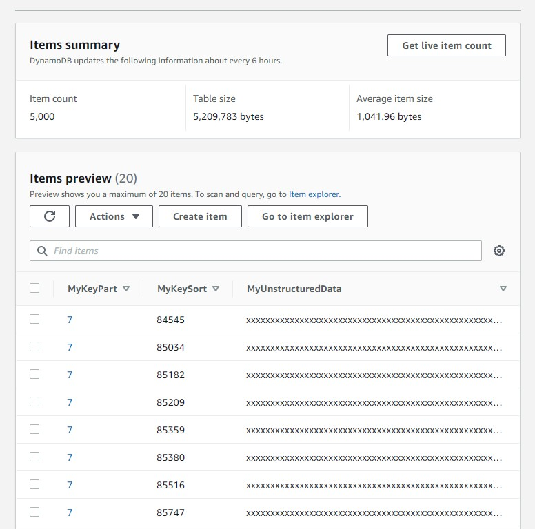

This was first published on https://www.dbi-services.com/blog/dynamodb-scan-pagination/ (2020-11-30)
Republishing here for new followers. The content is related to the versions available at the publication date.
.
In the previous post I described the PartiSQL SELECT for DynamoDB and mentioned that a SELECT without a WHERE clause on the partition key may result in a Scan, but the result is automatically paginated. This pagination, and the cost of a Scan, is something that may not be very clear from the documentation and I’ll show it here on the regular DynamoDB API. By not very clear, I think this is why many people in the AWS community fear that, with this new PartiQL API, there is a risk to full scan tables, consuming expensive RCUs. I was also misled, when I started to look at DynamoDB, by the AWS CLI “–no-paginate” option, as well as its “Consumed Capacity” always showing 128.5 even for very large scans. So those examples should, hopefully, clear out some doubts.
I have created a HASH/RANGE partitioned table and filled it with a few thousands of items:
aws dynamodb create-table --attribute-definitions \
AttributeName=MyKeyPart,AttributeType=N \
AttributeName=MyKeySort,AttributeType=N \
--key-schema \
AttributeName=MyKeyPart,KeyType=HASH \
AttributeName=MyKeySort,KeyType=RANGE \
--billing-mode PROVISIONED \
--provisioned-throughput ReadCapacityUnits=25,WriteCapacityUnits=25 \
--table-name Demo
for i in {1..5000} ; do aws dynamodb put-item --table-name Demo --item '{"MyKeyPart":{"N":"'$(( $RANDOM /1000 ))'"},"MyKeySort":{"N":"'$SECONDS'"},"MyUnstructuredData":{"S":"'$(printf %-1000s | tr ' ' x)'"}}' ; done
Here is how those items look like: 
I have created large items with a 1000 bytes “MyUnstructuredData” attribute. According to https://zaccharles.github.io/dynamodb-calculator/ an item size is around 1042 bytes. And that’s exactly the size I see here (5209783/5000=1041.96) from the console “Items summary” (I waited a few hours to get it updated in the screenshot above). This means that around 1000 items can fit on a 1MB page. We will see why I’m mentioning 1MB here: the title says 128.5 RCU and that’s the consumed capacity when reading 1MB with eventual consistency (0.5 RCU per 4KB read is 128 RCU per 1MB). Basically, this post will try to explain why we see a 128.5 consumed capacity at maximum when scanning any large table:
[opc@a aws]$ aws dynamodb scan --table-name Demo --select=COUNT --return-consumed-capacity TOTAL\
--no-consistent-read --output table
----------------------------------
| Scan |
+----------+---------------------+
| Count | ScannedCount |
+----------+---------------------+
| 5000 | 5000 |
+----------+---------------------+
|| ConsumedCapacity ||
|+----------------+-------------+|
|| CapacityUnits | TableName ||
|+----------------+-------------+|
|| 128.5 | Demo ||
|+----------------+-------------+|
[opc@a aws]$
TL;DR: this number is wrong 😉
You cannot scan 5000 items of 1000 bytes with 128.5 RCU as this is nearly 5MB scanned and you need 0.5 RCU per 4KB reads.
I’ve run this with “–output table” for a pretty print of it. Let’s have a look at the other formats (json and text):
[opc@a aws]$ aws dynamodb scan --table-name Demo --select=COUNT --return-consumed-capacity TOTAL \
--no-consistent-read --output json
{
"Count": 5000,
"ScannedCount": 5000,
"ConsumedCapacity": {
"TableName": "Demo",
"CapacityUnits": 128.5
}
}
[opc@a aws]$ aws dynamodb scan --table-name Demo --select=COUNT --return-consumed-capacity TOTAL\
--no-consistent-read --output text
1007 None 1007
CONSUMEDCAPACITY 128.5 Demo
1007 None 1007
1007 None 1007
1007 None 1007
972 None 972
The JSON format is similar to the TABLE one, but the TEXT output gives more information about this 128.5 consumed capacity as it appears after a count of 1007 items. Yes, this makes sense, 1007 is approximately the number of my items I expect in 1MB and, as I mentioned earlier, reading 1MB in eventual consistency consumes 128 RCU (0.5 RCU per 4KB). What actually happens here is pagination. A scan call is always limited to read 1MB at maximum (you can compare that to a fetch size in a SQL database except that it is about the amount read rather than returned) and what happens here is that the AWS CLI fetches the next pages in order to get the whole COUNT. Unfortunately, the “–return-consumed-capacity TOTAL” shows the value from the first fetch only. And only the TEXT format shows this count for each call. The TABLE and JSON formats do the sum of count for you (which is nice) but hide the fact that the Consumed Capacity is the one from the first call only.
The partial display of the consumed capacity is a problem with AWS CLI but each call actually returns the right value, which we can see with “–debug”:
[opc@a aws]$ aws dynamodb scan --table-name Demo --select=COUNT --return-consumed-capacity TOTAL \
--no-consistent-read --output table --debug 2>&1 | grep '"ConsumedCapacity"'
b'{"ConsumedCapacity":{"CapacityUnits":128.5,"TableName":"Demo"},"Count":1007,"LastEvaluatedKey":{"MyKeyPart":{"N":"2"},"MyKeySort":{"N":"96744"}},"ScannedCount":1007}'
b'{"ConsumedCapacity":{"CapacityUnits":128.5,"TableName":"Demo"},"Count":1007,"LastEvaluatedKey":{"MyKeyPart":{"N":"27"},"MyKeySort":{"N":"91951"}},"ScannedCount":1007}'
b'{"ConsumedCapacity":{"CapacityUnits":128.5,"TableName":"Demo"},"Count":1007,"LastEvaluatedKey":{"MyKeyPart":{"N":"20"},"MyKeySort":{"N":"85531"}},"ScannedCount":1007}'
b'{"ConsumedCapacity":{"CapacityUnits":128.5,"TableName":"Demo"},"Count":1007,"LastEvaluatedKey":{"MyKeyPart":{"N":"29"},"MyKeySort":{"N":"90844"}},"ScannedCount":1007}'
b'{"ConsumedCapacity":{"CapacityUnits":124.0,"TableName":"Demo"},"Count":972,"ScannedCount":972}'
Here the total RCU is 128.5+128.5+128.5+128.5+125=639 which is what we can expect here to scan a 5MB table (0.5*5209783/4096=636).
To make the confusion bigger, there are several meanings in “pagination”. One is about the fact that a scan call reads at maximum 1MB of DynamoDB storage (and then at maximum 128.5 RCU – or 257 for strong consistency). And the other is about the fact that, from the AWS CLI, we can automatically fetch the next pages.
I can explicitly ask to read only one page with the “–no-paginate” option (misleading name, isn’t it? It actually means “do not automatically read the next pages”):
[opc@a aws]$ aws dynamodb scan --table-name Demo --select=COUNT --return-consumed-capacity TOTAL \
--no-consistent-read --output json --no-paginate
{
"Count": 1007,
"ScannedCount": 1007,
"LastEvaluatedKey": {
"MyKeyPart": {
"N": "2"
},
"MyKeySort": {
"N": "96744"
}
},
"ConsumedCapacity": {
"TableName": "Demo",
"CapacityUnits": 128.5
}
}
[opc@a aws]$ aws dynamodb scan --table-name Demo --select=COUNT --return-consumed-capacity TOTAL \
--no-consistent-read --output text --no-paginate
1007 1007
CONSUMEDCAPACITY 128.5 Demo
MYKEYPART 2
MYKEYSORT 96744
Here, in all output formats, things are clear as the consumed capacity matches the number of items. The first 1MB page has 1007 items, which consumes 128.5 RCU, and, in order to know the total number, we need to read the next pages.
Different than the auto pagination (automatically call the next page until the end), the read pagination always happens for scans: you will never read more than 1MB from the DynamoDB storage in one call. This is how the API avoids any surprise in the response time: the fetch size depends on the cost of data access rather than the result. If I add a filter to my scan so that no rows are returned, the same pagination happens:
[opc@a aws]$ aws dynamodb scan --table-name Demo --select=COUNT --return-consumed-capacity TOTAL \
--no-consistent-read --output table \
--filter-expression "MyUnstructuredData=:v" --expression-attribute-values '{":v":{"S":"franck"}}'
----------------------------------
| Scan |
+----------+---------------------+
| Count | ScannedCount |
+----------+---------------------+
| 0 | 5000 |
+----------+---------------------+
|| ConsumedCapacity ||
|+----------------+-------------+|
|| CapacityUnits | TableName ||
|+----------------+-------------+|
|| 128.5 | Demo ||
|+----------------+-------------+|
[opc@a aws]$ aws dynamodb scan --table-name Demo --select=COUNT --return-consumed-capacity TOTAL \
--no-consistent-read --output text \
--filter-expression "MyUnstructuredData=:v" --expression-attribute-values '{":v":{"S":"franck"}}'
0 None 1007
CONSUMEDCAPACITY 128.5 Demo
0 None 1007
0 None 1007
0 None 1007
0 None 972
Here no items verify my filter (Count=0) but all items had to be scanned (ScanndCount=5000). And then, as displayed with the text output, pagination happened, returning empty pages. This is a very important point to understand DynamoDB scans: as there is no access filter (no key value) it does a Full Table Scan, with the cost of it, and the filtering is done afterwards. This means that empty pages can be returned and you may need multiple roundtrips even for no rows. And this is what I had here with the COUNT: 5 calls to get the answer “Count: 0”.
For my Oracle Database readers, you can think of DynamoDB scan operation like a “TABLE ACCESS FULL” in an execution plan (but not like a “TABLE ACCESS STORAGE FULL” which offloads the predicates to the storage) where you pay per throttled reads per second. The cost of the operation depends on the volume read (the size of the table) but not on the result. Yes, the message in DynamoDB is “avoid scan as much as possible” like we had “avoid full table scans as much as possible” in SQL databases, when used for OLTP, except for small tables. And guess what? The advantage of DynamoDB scan operation comes when you need to read a large part of the table because it can read many items with one call, with 1MB read I/O size on the storage… Yes, 1MB, the same as what the db_file_multiblock_read_count default value has always set for maximum I/O size behind in Oracle for full table scans. APIs change but many concepts are the same.
We can control the page size, if we want more smaller pages (but you need very good reasons to do so), by specifying the number of items. In order to show that it is about the number of items scanned but not returned after filtering, I keep my filter that removes all items from the result:
[opc@a aws]$ aws dynamodb scan --table-name Demo --select=COUNT --return-consumed-capacity TOTAL \
--no-consistent-read --output text --filter-expression "MyUnstructuredData=:v" --expression-attribute-values '{":v":{"S":"franck"}}' \
--page-size 500
0 None 500
CONSUMEDCAPACITY 64.0 Demo
0 None 500
0 None 500
0 None 500
0 None 500
0 None 500
0 None 500
0 None 500
0 None 500
0 None 500
0 None 0
Here each page is smaller than before, limited to 500 items. Then the RCU consumed by each call is smaller, as well as the response time. However, it is clear that the total number of RCU consumed is still the same, even higher:
[opc@a aws]$ aws dynamodb scan --table-name Demo --select=COUNT --return-consumed-capacity TOTAL \
--no-consistent-read --output text --filter-expression "MyUnstructuredData=:v" --expression-attribute-values '{":v":{"S":"franck"}}' \
--page-size 10 \
--debug 2>&1 | awk -F, '/b.{"ConsumedCapacity":{"CapacityUnits":/{sub(/[^0-9.]*/,"");cu=cu+$1}END{print cu}'
750.5
and the response time is higher because of additional roundtrips.
We can define smaller pages, but never larger than 1MB:
[opc@a aws]$ aws dynamodb scan --table-name Demo --select=COUNT --return-consumed-capacity TOTAL \
--no-consistent-read --output text --filter-expression "MyUnstructuredData=:v" --expression-attribute-values '{":v":{"S":"franck"}}' \
--page-size 1500
0 None 1067
CONSUMEDCAPACITY 128.5 Demo
0 None 1074
0 None 1057
0 None 1054
0 None 748
Here, even if I asked for 1500 items per page, I get the same as before because, given the item size, the 1MB limit is reached first.
A few additional tests:
[opc@a aws]$ aws dynamodb scan --table-name Demo --select=COUNT --return-consumed-capacity TOTAL \
--no-consistent-read --output table --page-size 1500 --no-paginate
Cannot specify --no-paginate along with pagination arguments: --page-size
[opc@a aws]$ aws dynamodb scan --table-name Demo --select=COUNT --return-consumed-capacity TOTAL \
--no-consistent-read --output table --page-size 1 --debug 2>&1 | grep '"ConsumedCapacity"' | head -2
b'{"ConsumedCapacity":{"CapacityUnits":0.5,"TableName":"Demo"},"Count":1,"LastEvaluatedKey":{"MyKeyPart":{"N":"7"},"MyKeySort":{"N":"84545"}},"ScannedCount":1}'
b'{"ConsumedCapacity":{"CapacityUnits":0.5,"TableName":"Demo"},"Count":1,"LastEvaluatedKey":{"MyKeyPart":{"N":"7"},"MyKeySort":{"N":"85034"}},"ScannedCount":1}'
[opc@a aws]$ aws dynamodb scan --table-name Demo --select=COUNT --return-consumed-capacity TOTAL \
--no-consistent-read --output table --page-size 10 --debug 2>&1 | grep '"ConsumedCapacity"' | head -2
b'{"ConsumedCapacity":{"CapacityUnits":1.5,"TableName":"Demo"},"Count":10,"LastEvaluatedKey":{"MyKeyPart":{"N":"7"},"MyKeySort":{"N":"85795"}},"ScannedCount":10}'
b'{"ConsumedCapacity":{"CapacityUnits":1.5,"TableName":"Demo"},"Count":10,"LastEvaluatedKey":{"MyKeyPart":{"N":"7"},"MyKeySort":{"N":"86666"}},"ScannedCount":10}'
[opc@a aws]$ aws dynamodb scan --table-name Demo --select=COUNT --return-consumed-capacity TOTAL \
--no-consistent-read --output table --page-size 100 --debug 2>&1 | grep '"ConsumedCapacity"' | head -2
b'{"ConsumedCapacity":{"CapacityUnits":13.0,"TableName":"Demo"},"Count":100,"LastEvaluatedKey":{"MyKeyPart":{"N":"7"},"MyKeySort":{"N":"94607"}},"ScannedCount":100}'
b'{"ConsumedCapacity":{"CapacityUnits":13.0,"TableName":"Demo"},"Count":100,"LastEvaluatedKey":{"MyKeyPart":{"N":"8"},"MyKeySort":{"N":"89008"}},"ScannedCount":100}'
First, I cannot disable auto pagination when defining a page size. This is why I used the debug mode to get the RCU consumed. Reading only one item (about 1KB) consumed 0.5 RCU because this is the minimum: 0.5 to read up to 4KB. Then I called for 10 and 100 items per page. This helps to estimate the size of items. 13 RCU for 100 items means that the average item size is 13*4096/0.5/100=1065 bytes.
You probably don’t want to reduce the page size under 1MB, except maybe if your RCU are throttled and you experience timeout. It is a response time vs. throughput decision. And in any case, a scan page should return many items. If I scan all my 5000 items with –page-size 1 will require 2500 RCU because each call is 0.5 at minimum:
[opc@a aws]$ aws dynamodb scan --table-name Demo --select=COUNT --return-consumed-capacity TOTAL --no-consistent-read --output text --filter-expression "MyUnstructuredData=:v" --expression-attribute-values '{":v":{"S":"franck"}}' --page-size 1 --debug 2>&1 | awk -F, '/b.{"ConsumedCapacity":{"CapacityUnits":/{sub(/[^0-9.]*/,"");cu=cu+$1}END{print cu}'
2500.5
This cost with the smallest page size is the same as reading each item with a getItem operation. So you see, except with this extremely small page example, that scan is not always evil. When you need to read many items, scan can get them with less RCU. How much is “many”? The maths is easy here. With 0.5 RCU you can read a whole 1MB page with scan, or just one item with getItem. Then, as long as, on average, you read more than one item per page, you get a benefit from scan. You can estimate the number of items you retreive. And you can divide the table size by 1MB. But keep in mind that if the table grows, the cost of scan increases. And sometimes, you prefer scalable and predictable response time over fast response time.
In addition to the page size (number of items scanned) we can also paginate the result. This doesn’t work for count:
[opc@a aws]$ aws dynamodb scan --table-name Demo --select=COUNT --return-consumed-capacity TOTAL \
--no-consistent-read --output text --max-items 1
1007 None 1007
CONSUMEDCAPACITY 128.5 Demo
1007 None 1007
1007 None 1007
1007 None 1007
972 None 972
Here, despite the “–max-items 1” the full count has been returned.
I’m now selecting (projection) two attributes, with a “–max-items 5”:
[opc@a aws]$ aws dynamodb scan --table-name Demo --select=SPECIFIC_ATTRIBUTES --projection-expression=MyKeyPart,MyKeySort \
--return-consumed-capacity TOTAL --no-consistent-read --output text --max-items 5
1007 1007
CONSUMEDCAPACITY 128.5 Demo
MYKEYPART 7
MYKEYSORT 84545
MYKEYPART 7
MYKEYSORT 85034
MYKEYPART 7
MYKEYSORT 85182
MYKEYPART 7
MYKEYSORT 85209
MYKEYPART 7
MYKEYSORT 85359
NEXTTOKEN eyJFeGNsdXNpdmVTdGFydEtleSI6IG51bGwsICJib3RvX3RydW5jYXRlX2Ftb3VudCI6IDV9
This, like pagination, gives a “next token” to get the remaining items.
[opc@a aws]$ aws dynamodb scan --table-name Demo --select=SPECIFIC_ATTRIBUTES --projection-expression=MyKeyPart,MyKeySort \
--return-consumed-capacity TOTAL --no-consistent-read --output text --max-items 5 \
--starting-token eyJFeGNsdXNpdmVTdGFydEtleSI6IG51bGwsICJib3RvX3RydW5jYXRlX2Ftb3VudCI6IDV9
0 0
CONSUMEDCAPACITY 128.5 Demo
MYKEYPART 7
MYKEYSORT 85380
MYKEYPART 7
MYKEYSORT 85516
MYKEYPART 7
MYKEYSORT 85747
MYKEYPART 7
MYKEYSORT 85769
MYKEYPART 7
MYKEYSORT 85795
NEXTTOKEN eyJFeGNsdXNpdmVTdGFydEtleSI6IG51bGwsICJib3RvX3RydW5jYXRlX2Ftb3VudCI6IDEwfQ==
The displayed cost here is the same as a full 1MB scan: 128.5 RCU and, if you look at the calls with “–debug” you will see that a thousand of items were returned. However, the ScannedCount is zero:
[opc@a aws]$ aws dynamodb scan --table-name Demo --select=SPECIFIC_ATTRIBUTES --projection-expression=MyKeyPart,MyKeySort \
--return-consumed-capacity TOTAL --no-consistent-read --output table --max-items 5 \
--starting-token eyJFeGNsdXNpdmVTdGFydEtleSI6IG51bGwsICJib3RvX3RydW5jYXRlX2Ftb3VudCI6IDV9
-----------------------------------------------------------------------------------------------------------
| Scan |
+-------+---------------------------------------------------------------------------------+---------------+
| Count | NextToken | ScannedCount |
+-------+---------------------------------------------------------------------------------+---------------+
| 0 | eyJFeGNsdXNpdmVTdGFydEtleSI6IG51bGwsICJib3RvX3RydW5jYXRlX2Ftb3VudCI6IDEwfQ== | 0 |
+-------+---------------------------------------------------------------------------------+---------------+
|| ConsumedCapacity ||
|+---------------------------------------------------------+---------------------------------------------+|
|| CapacityUnits | TableName ||
|+---------------------------------------------------------+---------------------------------------------+|
|| 128.5 | Demo ||
|+---------------------------------------------------------+---------------------------------------------+|
|| Items ||
Does it make sense? No items scanned but thousand if items retrieved, with the RCU of a 1MB read?
Let’s try to answer this. I’ll query this again and update one item:
[opc@a aws]$ aws dynamodb scan --table-name Demo --select=ALL_ATTRIBUTES --return-consumed-capacity TOTAL <
--no-consistent-read --output text --max-items 5 \
--starting-token eyJFeGNsdXNpdmVTdGFydEtleSI6IG51bGwsICJib3RvX3RydW5jYXRlX2Ftb3VudCI6IDV9 \
| cut -c1-80
0 0
CONSUMEDCAPACITY 128.5 Demo
MYKEYPART 7
MYKEYSORT 85380
MYUNSTRUCTUREDDATA xxxxxxxxxxxxxxxxxxxxxxxxxxxxxxxxxxxxxxxxxxxxxxxxxxxxxxxxxxxxx
MYKEYPART 7
MYKEYSORT 85516
MYUNSTRUCTUREDDATA xxxxxxxxxxxxxxxxxxxxxxxxxxxxxxxxxxxxxxxxxxxxxxxxxxxxxxxxxxxxx
MYKEYPART 7
MYKEYSORT 85747
MYUNSTRUCTUREDDATA xxxxxxxxxxxxxxxxxxxxxxxxxxxxxxxxxxxxxxxxxxxxxxxxxxxxxxxxxxxxx
MYKEYPART 7
MYKEYSORT 85769
MYUNSTRUCTUREDDATA xxxxxxxxxxxxxxxxxxxxxxxxxxxxxxxxxxxxxxxxxxxxxxxxxxxxxxxxxxxxx
MYKEYPART 7
MYKEYSORT 85795
MYUNSTRUCTUREDDATA xxxxxxxxxxxxxxxxxxxxxxxxxxxxxxxxxxxxxxxxxxxxxxxxxxxxxxxxxxxxx
NEXTTOKEN eyJFeGNsdXNpdmVTdGFydEtleSI6IG51bGwsICJib3RvX3RydW5jYXRlX2Ftb3VudCI6ID
[opc@a aws]$ aws dynamodb execute-statement \
--statement "update Demo set MyunstructuredData='Hello' where MyKeyPart=7 and MyKeySort =85516"
------------------
|ExecuteStatement|
+----------------+
I’ve used the PartiQL SQL-Like API juszt because I find it really convenient for this.
Now scanning from the same next token:
[opc@a aws]$ aws dynamodb scan --table-name Demo --select=ALL_ATTRIBUTES --return-consumed-capacity TOTAL <
--no-consistent-read --output text --max-items 5 \
--starting-token eyJFeGNsdXNpdmVTdGFydEtleSI6IG51bGwsICJib3RvX3RydW5jYXRlX2Ftb3VudCI6IDV9 \
| cut -c1-80
0 0
CONSUMEDCAPACITY 128.5 Demo
MYKEYPART 7
MYKEYSORT 85380
MYUNSTRUCTUREDDATA xxxxxxxxxxxxxxxxxxxxxxxxxxxxxxxxxxxxxxxxxxxxxxxxxxxxxxxxxxxxx
MYKEYPART 7
MYKEYSORT 85516
MYUNSTRUCTUREDDATA xxxxxxxxxxxxxxxxxxxxxxxxxxxxxxxxxxxxxxxxxxxxxxxxxxxxxxxxxxxxx
MYUNSTRUCTUREDDATA Hello
MYKEYPART 7
MYKEYSORT 85747
MYUNSTRUCTUREDDATA xxxxxxxxxxxxxxxxxxxxxxxxxxxxxxxxxxxxxxxxxxxxxxxxxxxxxxxxxxxxx
MYKEYPART 7
MYKEYSORT 85769
MYUNSTRUCTUREDDATA xxxxxxxxxxxxxxxxxxxxxxxxxxxxxxxxxxxxxxxxxxxxxxxxxxxxxxxxxxxxx
MYKEYPART 7
MYKEYSORT 85795
MYUNSTRUCTUREDDATA xxxxxxxxxxxxxxxxxxxxxxxxxxxxxxxxxxxxxxxxxxxxxxxxxxxxxxxxxxxxx
NEXTTOKEN eyJFeGNsdXNpdmVTdGFydEtleSI6IG51bGwsICJib3RvX3RydW5jYXRlX2Ftb3VudCI6ID
Besides the fact that my update has added a new attribute MyunstructuredData rather than replacing MyUnstructuredData because I made a typo (not easy to spot with the text output as it uppercases all attributes names) the important point is that I’ve read the new value. Despite the “ScannedCount=0”, I have obviously read the items again. Nothing stays in cache and there are no stateful cursors in a NoSQL database.
So just be careful with “–max-items”. It limits the result, but not the work done in one page read. RCU is always calculated from the number of 4KB that are read to get the page from the storage, far before any filtering. Where “–max-items” can limit the cost is when using auto pagination to avoid reading more pages than necessary:
[opc@a aws]$ aws dynamodb scan --table-name Demo --select=SPECIFIC_ATTRIBUTES --projection-expression=MyKeyPart,MyKeySort --return-consumed-capacity TOTAL \
--no-consistent-read --output text \
--max-items 2500 --debug 2>&1 | grep '"ConsumedCapacity"' | cut -c1-80
b'{"ConsumedCapacity":{"CapacityUnits":128.5,"TableName":"Demo"},"Count":1007,"I
b'{"ConsumedCapacity":{"CapacityUnits":128.5,"TableName":"Demo"},"Count":1007,"I
b'{"ConsumedCapacity":{"CapacityUnits":128.5,"TableName":"Demo"},"Count":1007,"I
Here limiting the displayed result to 2500 items only 3 pages (of 1007 items which are not filtered to the result) have been read.
I’ve run all those scans with “–no-consistent-read”, which is the default, just to make it implicit that we accept to miss the latest changes. With consistent reads, we are sure to read the latest, but requires more reads (from a quorum of mirrors) and doubles the RCU consumption:
[opc@a aws]$ aws dynamodb scan --table-name Demo --select=SPECIFIC_ATTRIBUTES --projection-expression=MyKeyPart,MyKeySort \
--return-consumed-capacity TOTAL --consistent-read --output text --max-items 5 \
--starting-token eyJFeGNsdXNpdmVTdGFydEtleSI6IG51bGwsICJib3RvX3RydW5jYXRlX2Ftb3VudCI6IDV9
0 0
CONSUMEDCAPACITY 257.0 Demo
MYKEYPART 7
MYKEYSORT 85380
MYKEYPART 7
MYKEYSORT 85516
MYKEYPART 7
MYKEYSORT 85747
MYKEYPART 7
MYKEYSORT 85769
MYKEYPART 7
MYKEYSORT 85795
NEXTTOKEN eyJFeGNsdXNpdmVTdGFydEtleSI6IG51bGwsICJib3RvX3RydW5jYXRlX2Ftb3VudCI6ID==
The cost here is 257 RCU as 4KB consistent reads cost 1 RCU instead of 0.5 without caring about consistency.
I focused on the scan operation here, but the same multi-item read applies to the query operation. Except that you do not read the whole table, even with pagination, as you define a specific partition by providing a value for the partition key which will be hashed to one partition.
Those tests are fully reproducible on the Free Tier. You don’t need billions of items to understand how it works. And once you understand how it works, simple math will tell you how it scales to huge tables.
{kind=link}